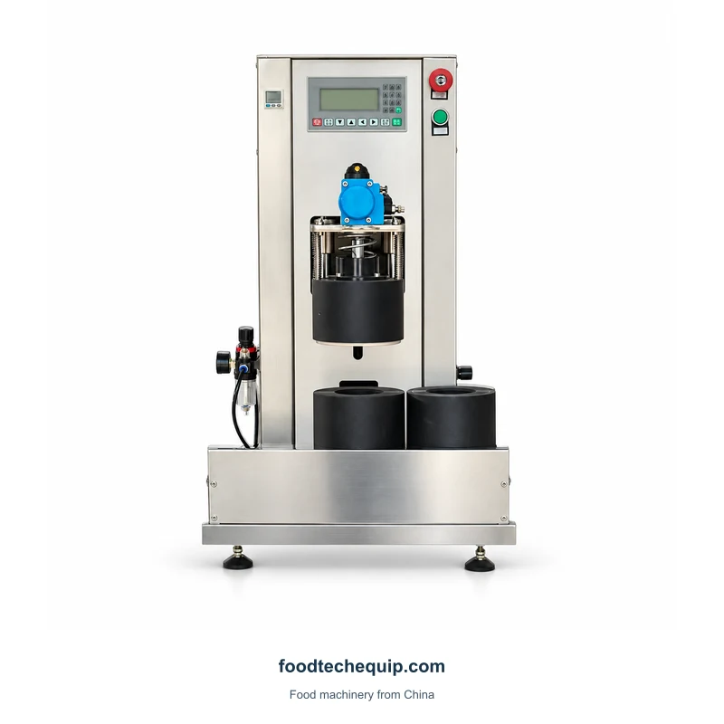
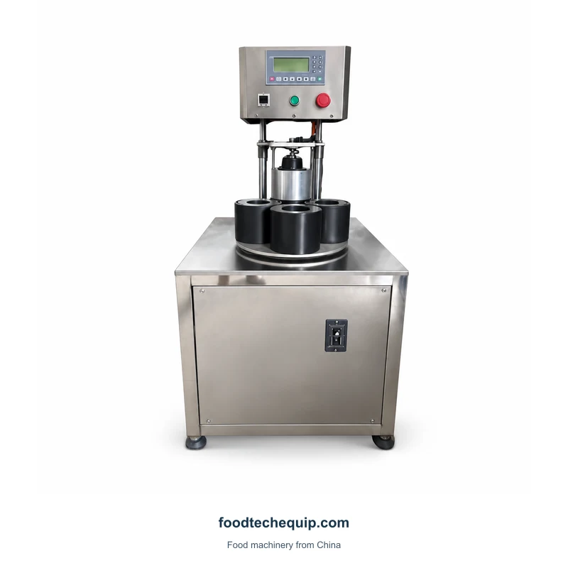
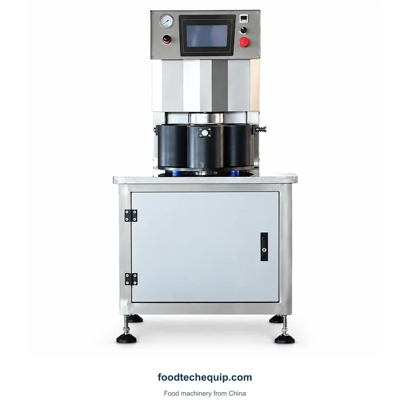
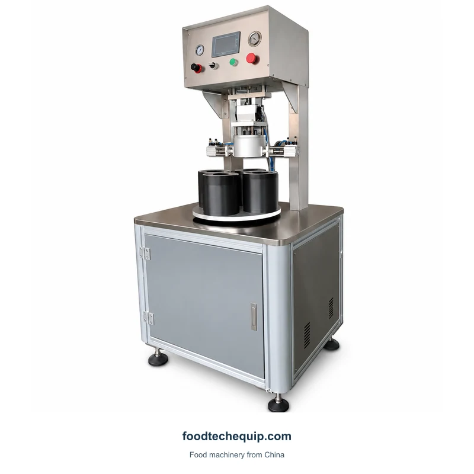
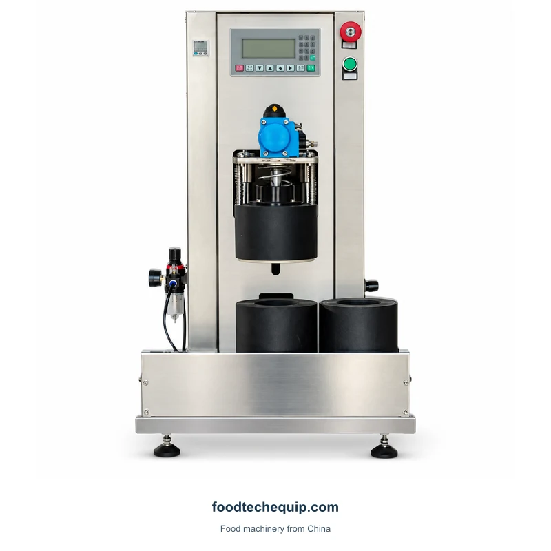
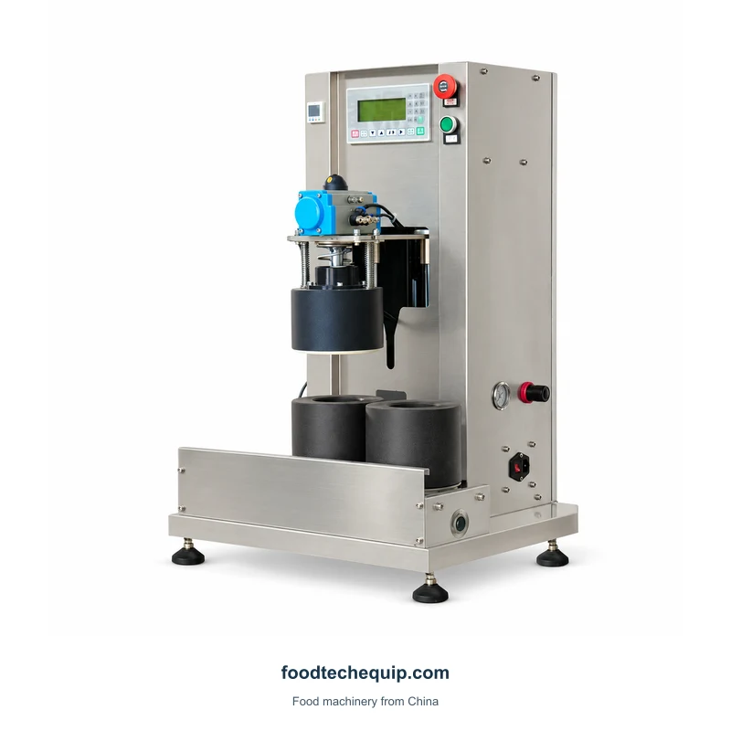

Capsulage sous vide de bocaux
Capsuleuse sous vide de bocaux
Équipement de bouchage de bocaux sous vide avec agencements automatiques, rotatifs et à deux stations.
Afficher l'équipementLe bouchage des bocaux sous vide est une tâche de contenant et de fermeture. Comparez la finition du pot, la construction de la fermeture et la disposition du chargement avant de sélectionner une configuration de station.

Équipement de bouchage de bocaux sous vide avec agencements automatiques, rotatifs et à deux stations.
Afficher l'équipement
Machine de bouchage de bocaux sous vide avec supports de récipients et commandes frontales.
Afficher l'équipement
Équipement de bouchage de bocaux sous vide avec agencements à deux et quatre stations.
Afficher l'équipement
Machine de bouchage de bocaux sous vide semi-automatique dotée d'une base d'armoire et d'une tête de travail.
Afficher l'équipement
Équipement de bouchage de bocaux sous vide semi-automatique avec agencements à deux et quatre stations.
Afficher l'équipement
Équipement de bouchage de bocaux sous vide avec agencements à deux et quatre stations.
Afficher l'équipement
Équipement semi-automatique de bouchage de bocaux sous vide avec une disposition à quatre stations.
Afficher l'équipementEssayez un autre mot-clé ou effacez vos filtres.
Fournir des bocaux et des fermetures assortis, y compris les dimensions de finition et le revêtement ou le joint. Ceux-ci définissent les modalités de fermeture de votre pack.
Spécifiez la séquence de chargement, la disposition des stations et le résultat de fermeture requis. Incluez comment la fermeture finie sera évaluée pour votre produit.
| Zone de sélection | Que comparer | Que fournir |
|---|---|---|
| Finition du pot | L'ouverture et la fermeture assortie | Pot et bouchon en ensemble complet |
| Disposition des stations | Séquence de chargement et de déchargement | Entrée de la station sélectionnée et tâche de l'opérateur |
| Résultat de clôture | Évaluation de la fermeture terminée | Revêtement ou joint et méthode d'évaluation |
Fournissez la finition du pot et la fermeture correspondante, puis décrivez le résultat de fermeture et la séquence de chargement. Comparez les dispositions de bouchage des bouteilles en utilisant le récipient et le bouchon impliqués dans chaque tâche.